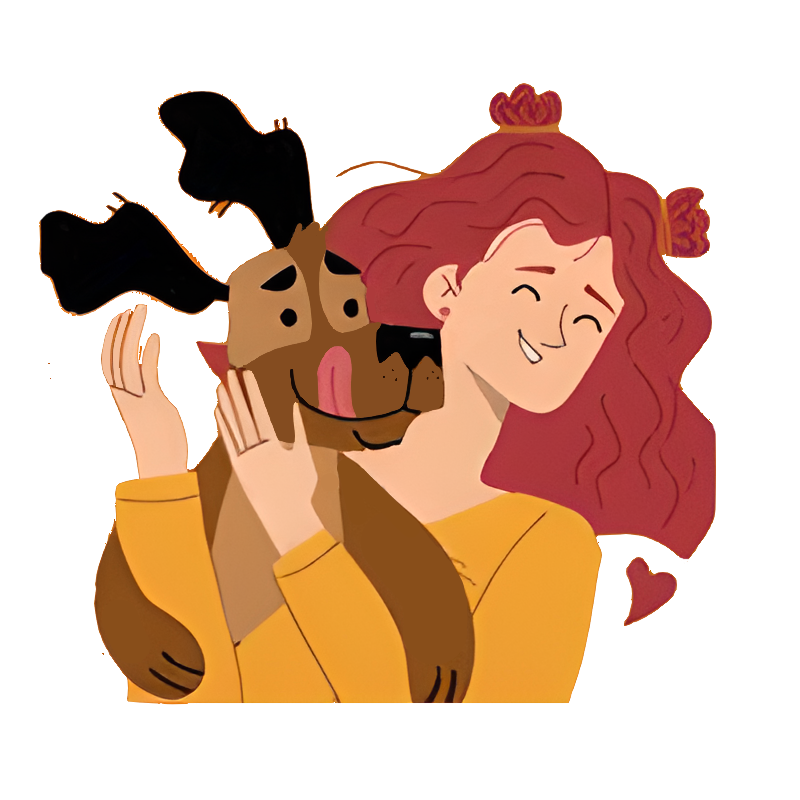
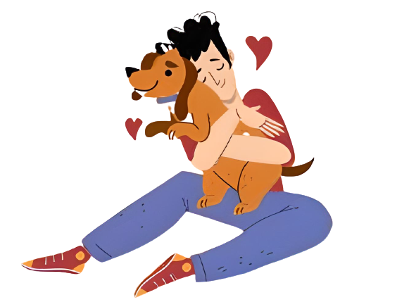

Abandono De Animais No Brasil
Existem mais de 30 milhões de animais abandonados nas ruas brasileiras.
- Com 10 milhões de gatos
- E 20 milhões de cães
- Em São Paulo, de 35 mil animais, 13% estão em situação de abandono.
- Pela falta de apoio e cuidados para essa quantidade de animais, muitas vezes eles são eutanasiados
- Apenas 41% (21,5 milhões dos cães domésticos foram adotados, enquanto os gatos, 85% (18,78 milhões))

Fonte: Jusbrasil 2023.